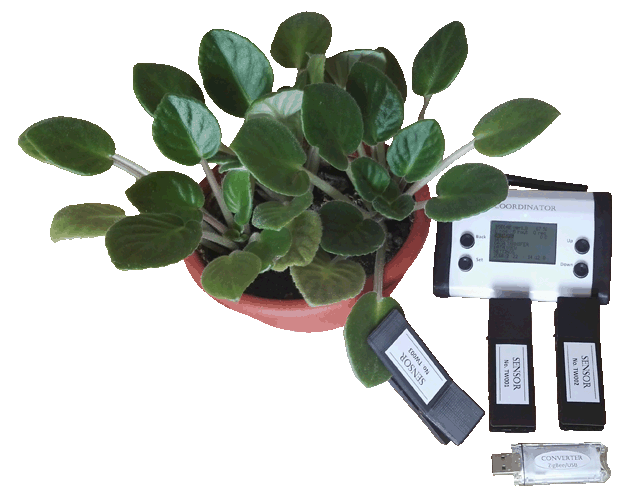
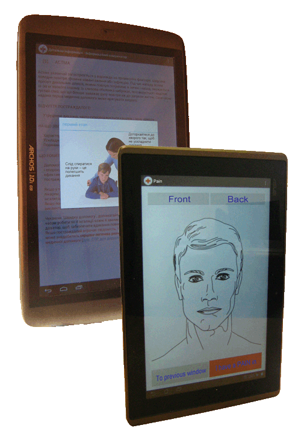

Welcome to Site
Welcome to the website of Data Acquisition System Department of V.M.Glushkov's Institute of Cybernetics of NAS of Ukraine.
More information about our Institute can be found athttps://www.incyb.kiev.ua.
More information about National Academy of sciences of Ukraine can be found athttps://www.nas.gov.ua.
Briefly about department
The main activity of the department is directed to the development of information technologies, wireless
sensor networks, hardware-software means and devices of the Internet of Things for estimating the state of
objects of different origins and implementation of developed technologies in various spheres of human
activity and industry, in particular: agriculture, horticulture, environmental monitoring and protection,
medicine, telemedicine and food industry.
Recent projects

Portable device 'FLORATEST'
The portable device 'FLORATEST' is intended for express-diagnostics of the impact of stress factors of
natural and anthropogenic origin on the state of plants. The device measures the induction of
chlorophyll fluorescence without damaging the plant. The use of the curve of chlorophyll fluorescence
induction makes it possible to diagnose the influence of one or another factor on the state of plants
and to take timely measures to eliminate or compensate the negative impact in order to avoid crop losses
or plant death.

Wireless sensor network for agriculture
The wireless sensor network is intended for real-time estimation of the impact of stress factors on the
state of plants in large areas for use in agriculture and environmental monitoring. Distributed sensors
with embedded wireless transmitters are used as nodes of wireless sensor network for express estimation
of the state of plants. The data acquisition about the state of plants is carried out through the
self-organization of wireless nodes with different sets of sensors into a wireless sensor network that
can covers a large territory.

Information medical communicator
The information medical communicator is designed to support the first contact between the doctor and
patient by providing detailed information about the injury or disease and appropriate methods of care
and treatment during the first examination of the sick or injured person, and in emergency medicine to
communicate with patients who have lost the ability to speak or patients with limited opportunities.
Correct communication and mutual understanding between the doctor and patient helps to avoid problems
related to making a diagnosis and predicting the development of the disease, and leads the patient to a
quick recovery.